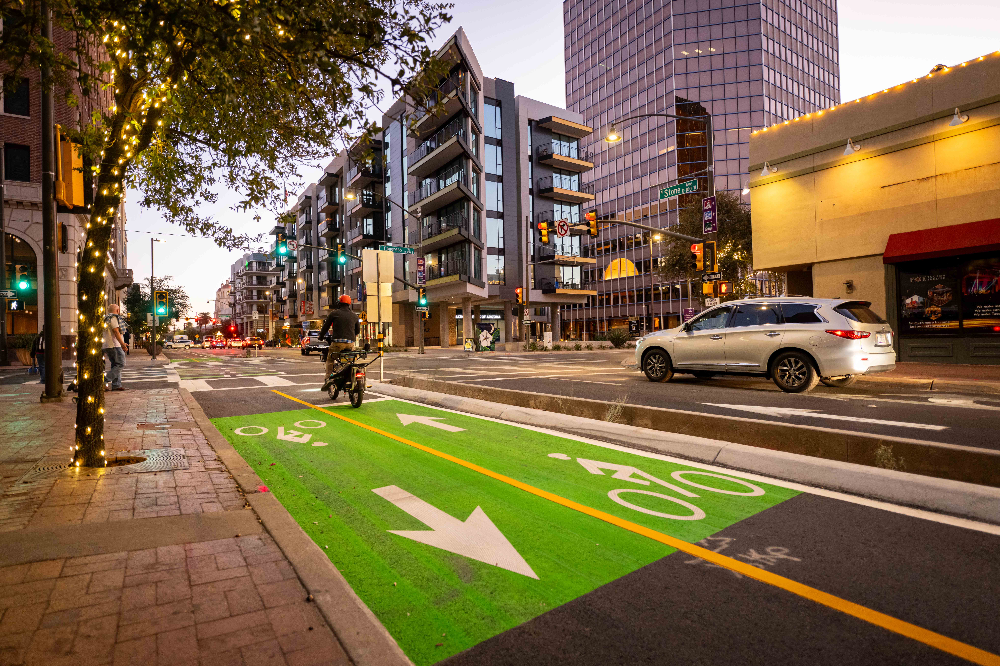

QGIS Desktop GIS
Introductory spatial analysis and styling using QGIS, an open-source GIS platform. Includes completed .qgz projects with custom layer styling and spatial analyses based on QGIS.org tutorials.
I am passionate about making active transportation
an option for all ages and abilities.

Transportation Planner | GIS Specialist | MPA
I have been a Planner for the City of Tucson Department of Transportation and Mobility for 2 years, recently earned my Master in Public Administration, and earned a BS in Sustainable Built Environments from the University of Arizona. In my educational and professional capacities, I have used ESRI products such as ArcGIS Online and ArcGIS Pro to visualize data with the goal of making informed, data-driven decisions.
My work sits at the intersection of urban planning, data analysis, and technology — bringing spatial thinking and technical tools together to support better transportation decisions.
A selection of GIS, planning, and data projects from my professional and academic work.
Introductory spatial analysis and styling using QGIS, an open-source GIS platform. Includes completed .qgz projects with custom layer styling and spatial analyses based on QGIS.org tutorials.
Working with tabular, vector, and raster GIS datasets in Python using Pandas and GeoPandas. Implemented and tested functions via guided notebooks in a containerized codespace environment.
Imported shapefiles and spatial datasets into PostGIS to answer geographic queries — including population counts within city boundaries and proximity analyses (e.g., residents within 50m of Queensboro).
End-to-end spatial analysis using OpenStreetMap data, PostGIS, and Python. Loaded OSM shapefiles, ran spatial SQL queries, and visualized results in Jupyter Notebooks — first for Arizona, then adapted for Oregon.
An interactive web map built with HTML, CSS, JavaScript, and Leaflet displaying multiple GeoJSON datasets with custom styling, popups, and layer controls. Published via GitHub Pages.
Interested in collaborating or have questions about my work? Feel free to reach out using the form below.